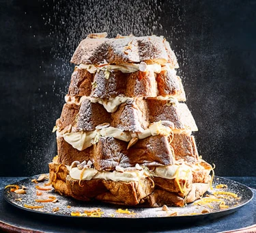

Ingredients
- 300ml double cream
- 250g mascarpone
- 4 tbsp Pedro Ximénez sherry
- 1 large orange, zested
- 2 tbsp icing sugar, plus extra for dusting
- 1 pandoro
- 50g almonds, toasted and roughly chopped
- Edible gold leaf (optional)
Method
- In a large bowl, whisk together the cream, mascarpone, half the sherry, 3/4 of the zest, and the icing sugar until the mixture is floppy and just holds its shape.
- Cut the pandoro horizontally into five slices. Put the bottom piece on a serving plate or cake stand and drizzle over a little of the remaining sherry. Spoon over a quarter of the cream mixture and top with a handful of the almonds (saving enough for each layer and to decorate the top).
- Add the next layer of pandoro and continue to sandwich the layers together, rotating each at a different angle so that you create the shape of a Christmas tree.
- Dust with icing sugar, then dot over the gold leaf (if using) along with the remaining almonds and orange zest.